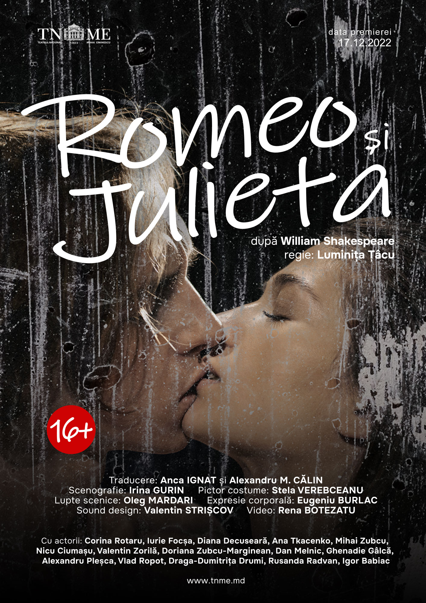
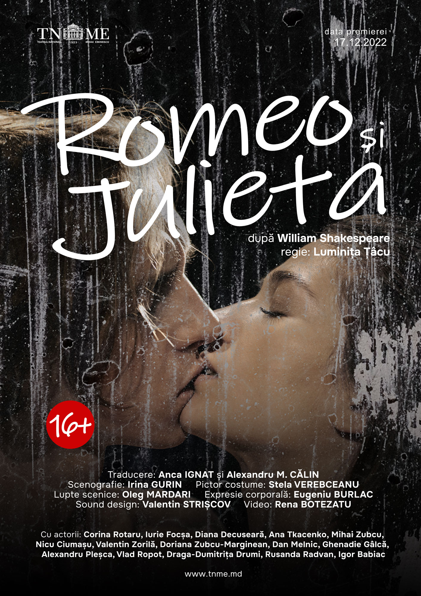

27 Martie - Ziua Mondiala a Teatrului
Putin istoric:
Ziua mondiala a teatrului a fost instituita in 1961, de Institutul International de Teatru (ITI), iar din 1962, a devenit un eveniment anuala, orgnaizat de centrele ITI si comunitatea internationala de teatru.
Teatru
Teatrul (în greaca veche: θέατρον, theatron) este o formă de artă a spectacolului care folosește interpreți (de obicei actori) care joacă în direct un eveniment real sau imaginar în fața unui public într-un loc specific, de cele mai multe ori pe o scenă.
Genuri teatrale:
- comedie
- pantomima
- romanta
- tragedie
- tragicomedie
- drama
Dictionarul mic
- comedie
- este o pieasa de teatru, un film, un program de televiziune, unspectacol de stand-up, o carte sau orice alt mediu de divertisment destinat sa amuze publicul si sa faca spectatorii sa rada.
- drama
- este o specie a genului dramatic, caracterizata prin ilustrarea vietii reale prin intermediul unui conflict complex si puternic al personajelor, cu intamplari si situatii tragice, in care eroii au un destin nefericit.
- tragedie
- este o specie a genului dramatic, in proza sau in versuri, reprezentand personaje puternice, angajate in lupta cu destinul potrivnic, cu ordinea existenta a lumii ori cu propriile sentimente, acest conflict solutionandu-se cu moartea eroului.
Repertoriul teatrelor din Chisinau
- 'Titanic Vals'-28.03
- 'Cei drepti'- 29.03
- 'Frunze de dor'-30.03
- 'Romeo si Julieta'-31.03
Galerie de afise


 
